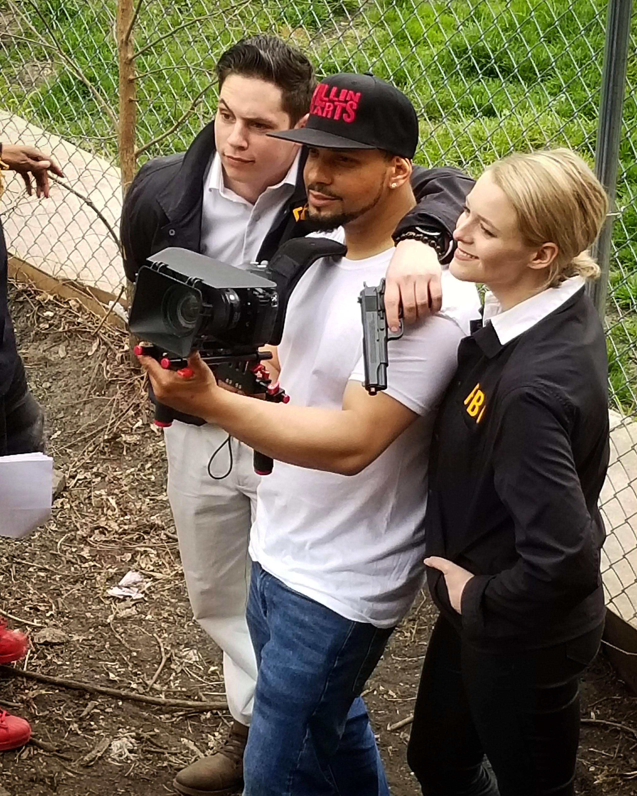
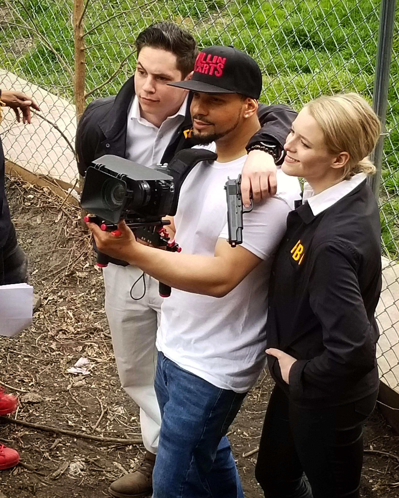

Marsden studied acting at The Second City and has acted in a number of productions. Recently, Marsden played the lead in a short film entitled Stages, as well as an FBI agent in the feature-length film, Disconnected, which will be released in select theaters fall 2018. Marsden was also on the cast of Funemployed, a sketch show which ran in Second City’s Blackout Cabaret.

 
